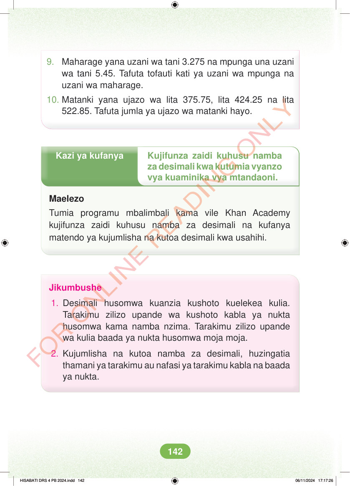

<!DOCTYPE html>
<html lang="sw-TZ"><head><meta charset="utf-8"><meta name="viewport" content="width=device-width,initial-scale=1">
<title>Hisabati: Kitabu cha Mwanafunzi Darasa la Nne</title>
<meta name="title-id" content="pg148_sec001"><meta name="page-section-id" content="155">
<link href="./content/tailwind_output.css" rel="stylesheet"><link href="./assets/libs/fontawesome/css/all.min.css" rel="stylesheet"><link href="./assets/fonts.css" rel="stylesheet">
<style>body{margin:0;background:#eef1ed}main{width:100%;display:flex;justify-content:center;padding:1rem 1rem 5rem;box-sizing:border-box}#content{width:100%;display:flex;justify-content:center}.pdf-page{position:relative;width:min(calc(100vw - 2rem),56rem);aspect-ratio:540.8980102539062/750.6610107421875;background:white;box-shadow:0 4px 24px #0002;overflow:hidden}.pdf-page img{position:absolute;inset:0;width:100%;height:100%;object-fit:fill}</style>
</head><body><main><h1 class="sr-only" id="page-heading">Ukurasa wa 148</h1><div id="content" class="opacity-0"><section role="article" data-section-type="pdf_accessible_page" data-section-id="pg148_sec001" aria-labelledby="page-heading" class="pdf-page"><p class="sr-only" data-id="pg148_gp001_tx001">9. Maharage yana uzani wa tani 3.275 na mpunga una uzani wa tani 5.45. Tafuta tofauti kati ya uzani wa mpunga na uzani wa maharage. 10. Matanki yana ujazo wa lita 375.75, lita 424.25 na lita 522.85. Tafuta jumla ya ujazo wa matanki hayo. Kazi ya kufanya Kujifunza zaidi kuhusu namba za desimali kwa kutumia vyanzo vya kuaminika vya mtandaoni. Maelezo Tumia programu mbalimbali kama vile Khan Academy kujifunza zaidi kuhusu namba za desimali na kufanya matendo ya kujumlisha na kutoa desimali kwa usahihi. Jikumbushe 1. Desimali husomwa kuanzia kushoto kuelekea kulia. Tarakimu zilizo upande wa kushoto kabla ya nukta husomwa kama namba nzima. Tarakimu zilizo upande wa kulia baada ya nukta husomwa moja moja. 2. Kujumlisha na kutoa namba za desimali, huzingatia thamani ya tarakimu au nafasi ya tarakimu kabla na baada ya nukta. HISABATI DRS 4 PB 2024.indd 142 HISABATI DRS 4 PB 2024.indd 142 06/11/2024 17:17:26 06/11/2024 17:17:26</p></section></div></main><div class="relative z-50" id="interface-container"></div><div class="relative z-50" id="nav-container"></div><script src="./assets/offline-preloader.js?v=audiofix-20260824-1"></script><script src="./assets/scorm.js"></script><script src="./assets/base.bundle.local.js?v=audiofix-20260824-1"></script></body></html>